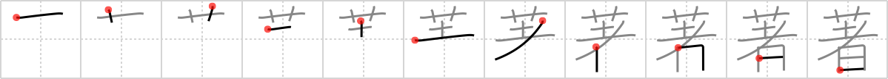

著
← →
renowned

Reading:
On-Yomi: チョ、チャク — Kun-Yomi: あらわ.す、いちじる.しい
Heisig story:
Flowers . . . puppet.
Koohii stories:
1) [decamer0n] 10-5-2007(180): Here I am, putting a wreath of flowers on my love doll's head and pretending she is someone of great renowned.
2) [trikatu] 14-2-2007(51): This someone is so renowned they are covered with flowers every time they perform on stage.
3) [SammyB] 30-6-2009(46): The most renowned ninja can use even flowers to kill someone.
4) [mantixen] 29-9-2008(26): If you put flowers on your voodoo doll that person will become renowned.
5) [smithsonian] 14-3-2007(25): People throw flowers on the stage after Pinocchio performs his act for the renowned evil puppeteer guy.